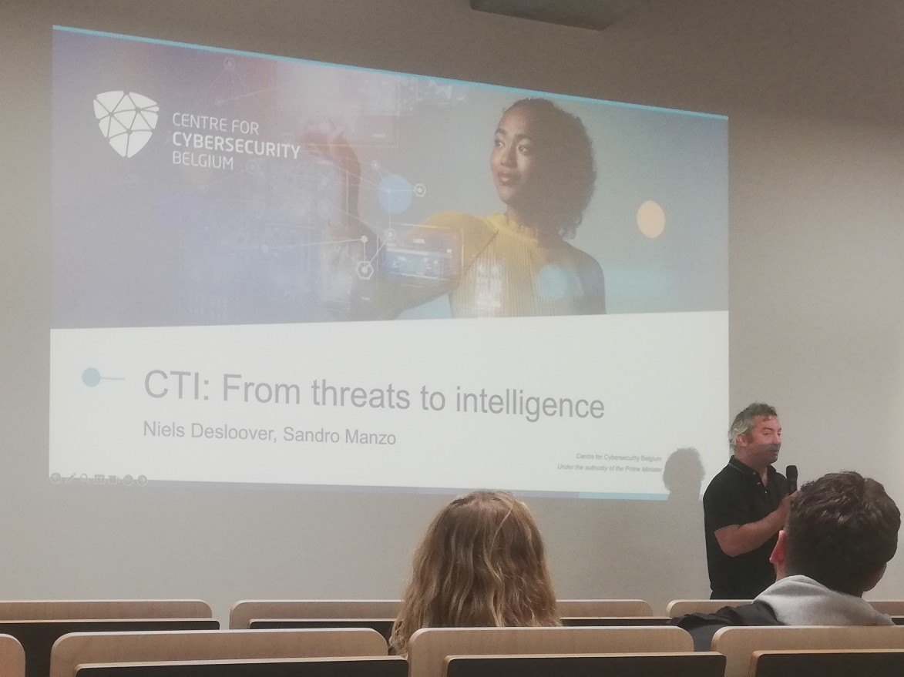
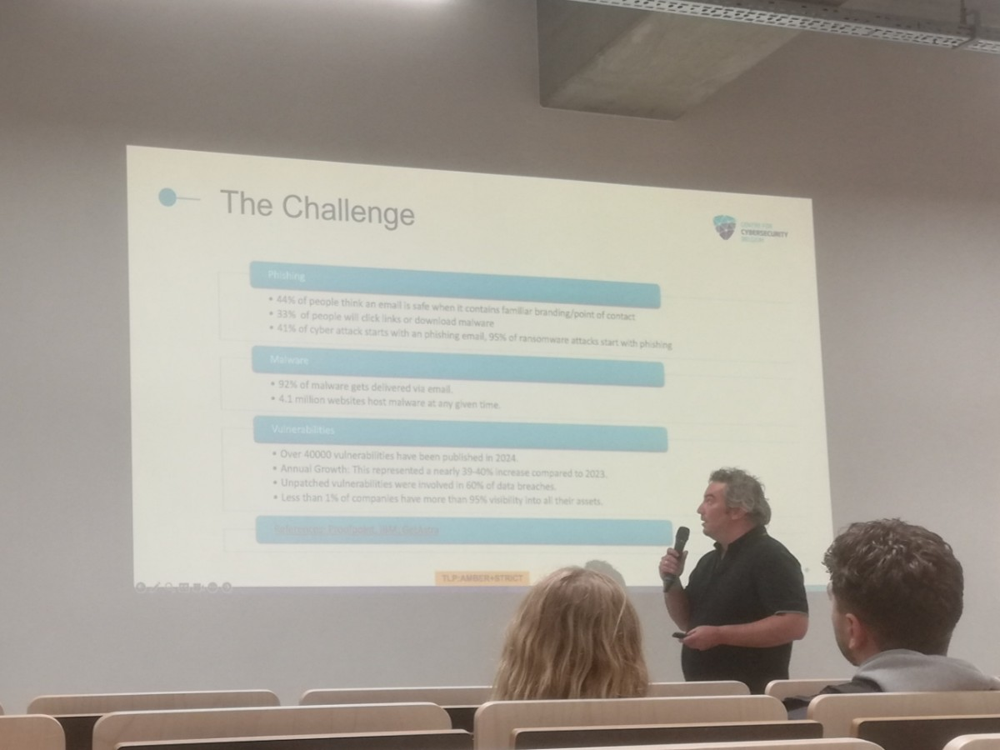
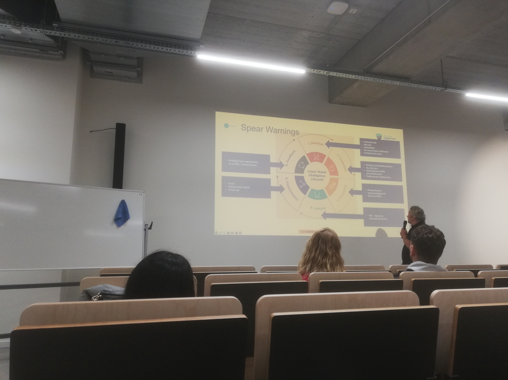

Op 7 oktober mocht ik een fascinerende Tech&Meet sessie bijwonen over Cyber Threat Intelligence (CTI) aan Howest Brugge. Onder de titel "From Threats to Tactics" kregen we een unieke inkijk in de werking van het Centrum voor Cybersecurity België (CCB). De sprekers, Sandro Manzo (Lead of the Fusion Centre) en Niels Desloover (CTI Analyst), boden een diepgaande blik op hoe ons land zich digitaal verdedigt tegen moderne cyberdreigingen.
De Architectuur van Belgische Cybersecurity
Sinds de oprichting in 2014 heeft het CCB een enorme evolutie doorgemaakt. Een indrukwekkend feit is dat België in 2024 het eerste land was dat de NIS2-richtlijn toepaste, wat onze voortrekkersrol in Europa onderstreept. Met een team van ongeveer 120 experts is het centrum onderverdeeld in drie cruciale departementen:
- CERT.be: De 'brandweer' van de Belgische cybersecurity die operationeel ingrijpt bij incidenten.
- CyTRIS: De intelligence-tak die dreigingen analyseert en vertaalt naar bruikbare tactieken.
- NCCA: De autoriteit die toeziet op cybersecurity-certificeringen.
Defense vs. Protection: Het Schild en de Speer
Een cruciaal concept dat tijdens de sessie werd toegelicht, is het verschil tussen Defense en Protection. Waar Defense louter draait om het hebben van een schild (passieve verdediging), gaat Protection een stap verder door ook een 'speer' te hanteren — een vorm van actieve bescherming. In België heeft het CCB de unieke bevoegdheid om algemene scanning uit te voeren op phishing en malware om zo proactief dreigingen te elimineren.
Dit vertaalt zich in concrete initiatieven zoals het Bephish project en het Belgian Anti Phishing Shield (BAPS). Dagelijks worden er via verdacht@safeonweb.be maar liefst 30.000 tot 40.000 verdachte e-mails doorgestuurd door alerte burgers. Deze data is goud waard voor het CCB om aanvalspatronen te herkennen.


De Impact van AI op Phishing
Als AI-student vond ik de observatie over de impact van Large Language Models (LLMs) zoals ChatGPT bijzonder treffend. De tijd van phishing-mails vol schrijffouten en kromme zinnen is definitief voorbij. AI stelt aanvallers in staat om nagenoeg perfecte teksten te genereren, waardoor de technische barrière voor effectieve phishing aanzienlijk is verlaagd. Dit maakt actieve beschermingsprojecten nog urgenter.
Actieve Bescherming: Spear Warning & Red Button
Twee projecten sprongen eruit als voorbeelden van die 'speer' in de verdediging:
- Spear Warning Project: Een vorm van Active Cyber Protection waarbij het CCB organisaties individueel waarschuwt wanneer er specifieke kwetsbaarheden of gelekte inloggegevens worden gedetecteerd op hun netwerken.
- Red Button Project: Een nationaal anti-DDoS project dat een gecoördineerde respons mogelijk maakt tussen het CCB, internetproviders en slachtoffers om grootschalige aanvallen onmiddellijk in de kiem te smoren.
Deze avond was een krachtige reminder dat cybersecurity geen statisch gegeven is. Het vereist een constante wisselwerking tussen menselijke intelligentie en technologische innovatie. Het was indrukwekkend om te zien hoe België hierin een leidende rol speelt.
Bekijk ook mijn originele post en de discussie op LinkedIn:
Bekijk op LinkedIn